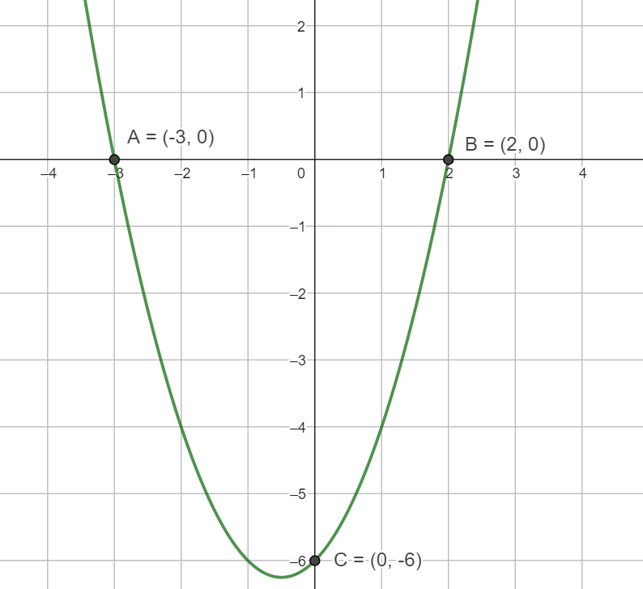
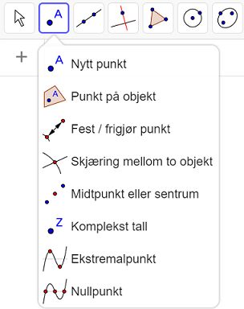
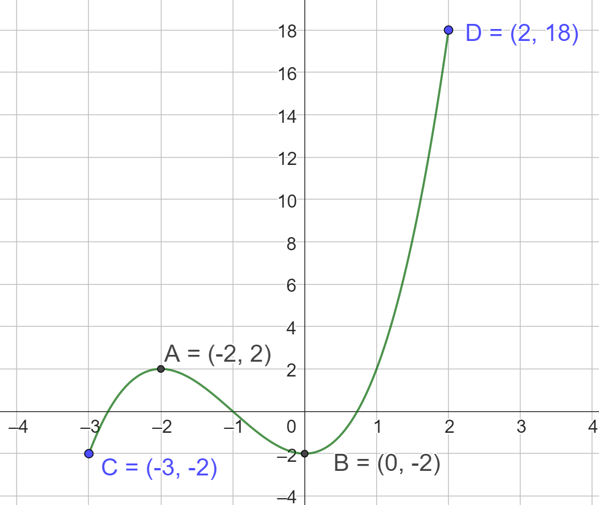
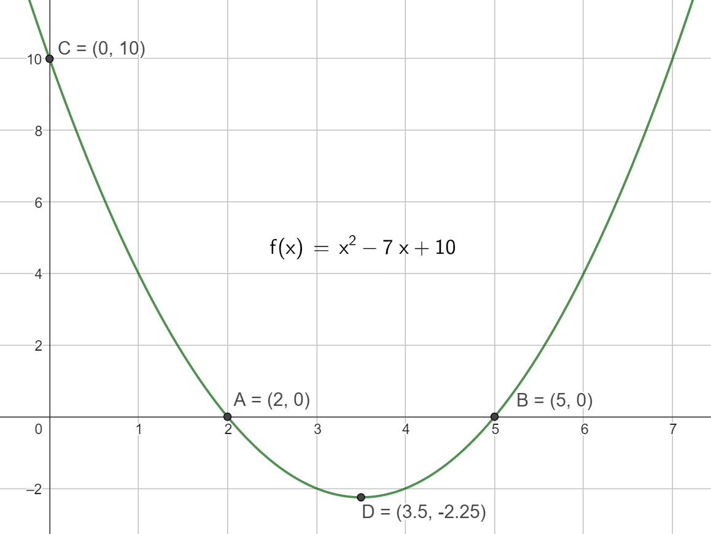

Viktige punkt
Contents
Viktige punkt#
Det er noen punkter på grafen til en funksjon som ofte er spesielt interessante. I 1T kommer vi i hovedsak til å se på skjæringspunktene med koordinataksene og eventuelle topp- og bunnpunkt.
Skjæring med koordinataksene#
I et vanlig todimensjonalt koordinatsystem har vi to akser, \(x\)-aksen og \(y\)-aksen.
Skjæringspunkt med \(y\)-aksen
Skjæringspunktet med \(y\)-aksen finner vi ved å regne ut \(f(0)\). Vi setter altså inn \(x = 0\) i funksjonsuttrykket.
Skjæringspunkt med \(x\)-aksen
Skjæringspunktet med \(x\)-aksen finner vi ved å løse likningen \(f(x)=0\). Dette er det samme som å finne nullpunktet til funksjonen.
Eksempel 1 på skjæringspunkt med koordinataksene
En funksjon er gitt ved \(f(x)=2x+4\).
Funksjonen skjærer \(y\)-aksen når \(x=0\). Regner det ut ved:
Skjæringspunktet med \(y\)-aksen er altså \((0, 4)\).
Skjæringspunktet med \(x\)-aksen er det samme som nullpunktet. Det finner vi ved å løse:
Det er ei vanlig likning som gir oss \(x=-2\). Skjæringspunktet med \(x\)-aksen blir \((-2, 0)\).
{kind=link}
Eksempel 2 på skjæringspunkt med koordinataksene
En funksjon er gitt ved \(f(x)=x^2+x-6\).
Funksjonen skjærer \(y\)-aksen når \(x=0\). Regner det ut ved:
Skjæringspunktet med \(y\)-aksen er altså \((0, -6)\).
Skjæringspunktene med \(x\)-aksen er nullpunktene. Det finner vi ved å løse:
Ved bruk av abc-formelen får vi nullpunktene \(x=-3\) og \(x=2\). Skjæringspunktene med \(x\)-aksen blir \((-3, 0)\) og \((2,0)\).

Topp- og bunnpunkt#
Topp- og bunnpunkt på en graf kalles med en fellesbetegnelse for ekstremalpunkt. Vi kan ha flere ekstremalpunkter og hvis funksjonen er definert på et lukket intervall \([a, b]\) vil endepunktene også være ekstremalpunkter. Om funksjonen er definert på et åpent intervall \(\langle a, b\rangle\) vil endepunktene ikke være ekstremalpunkter.
I 1T finner vi i hovedsak ekstremalpunkter ved å bruke knappen for “Ekstremalpunkt” i punktmenyen i GeoGebra.

Eksempel på ekstremalpunkt
En funksjon er gitt ved \(f(x)=x^3+3x^2-2\). Definisjonsmengden er \(D_f = [-3, 2\rangle\) Hva er ekstremalpunktene?
Vi tegner opp funksjonen i GeoGebra og bruker “Ekstremalpunkt”. I tillegg er punktene \(C\) og \(D\) blitt tegnet inn. 
Ved å bruke “Ekstremalpunkt” i GeoGebra finner vi punktene \(A=(-2, 2)\) og \(B=(0,-2)\) som er henholdsvis et toppunkt og et bunnpunkt. I tillegg ser vi at vi har med nedre endepunkt i definisjonsmengden, så \(C=(-3, -2)\) er et bunnpunkt. \(D=(2,18)\) vil ikke være et toppunkt siden \(x=2\) akkurat ikke er med i definisjonsmengden.
Oppgaver#
Oppgave: Finn skjæringspunkt og ekstremalpunkt
En funksjon er gitt ved \(f(x)=x^2-7x+10\). Finn skjæringspunktene med koordinataksene og finn ekstremalpunktene.
Løsningsforslag
For å finne skjæringspunkt med \(y\)-aksen regner vi ut \(f(0) = 0^2-7\cdot 0 + 10 = 10\). Skjæringspunktet blir \((0, 10)\). Skjæringspunktet kan også finnes ved å bruke knappen for “Skjæring mellom to objekt” i GeoGebra. Vi finner da skjæringen mellom funksjonen og y-aksen.
For å finne skjæringspunktene med \(x\)-aksen (nullpunktene) løser vi likningen \(f(x)= x^2-7x+10=0\) Med for eksempel abc-formelen finner vi nullpunktene:
Skjæringspunktene blir altså \((2, 0)\) og \((5, 0)\). Skjæringspunktene kan også finnes ved å bruke knappen “Nullpunkt” i GeoGebra.
Da finner vi bunnpunktet (3.5, -2.25). For andregradsfunksjoner kan vi finne topp- og bunnpunkt ved å finne symmetrilinja. I R1 vil vi kunne finne ekstremalpunkter på flere funksjonstyper ved regning.

Videoer#
Her kan du se videoer for en del av innholdet på denne siden: